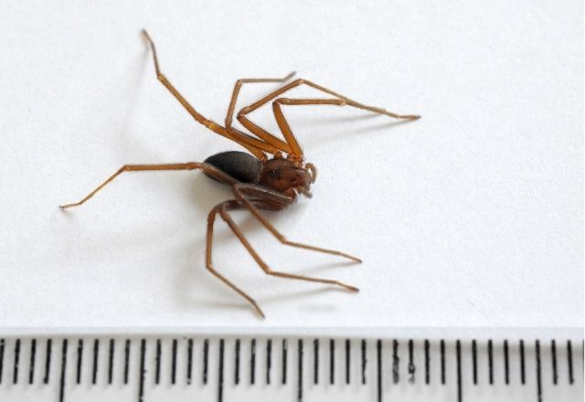

Aranha Marrom
Aranha-marrom (Loxosceles gaucho) é uma aranha do gênero Loxosceles, presente em todo o Brasil, sendo mais comum no Paraná.
É conhecida por seu veneno com ação hemolítica e dermonecrótica, sendo registradas cerca de 5.000 casos por ano no Brasil.